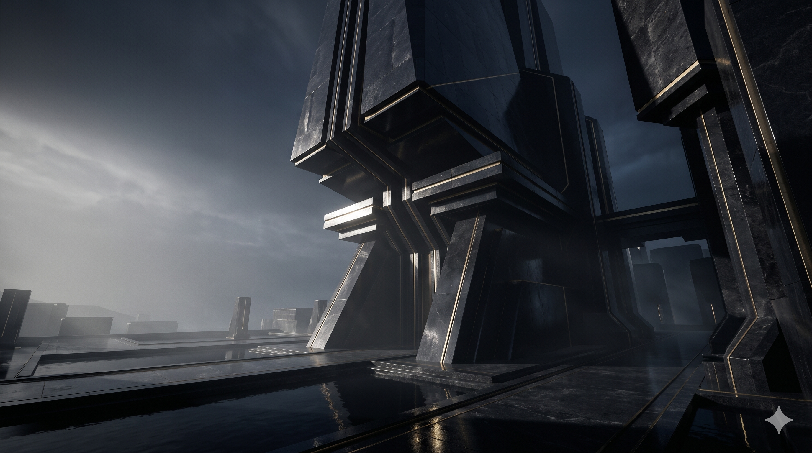

BUILDING BEYOND
BOUNDARIES.
An integrated institutional ecosystem designed to create, develop, and manage generational opportunities across eleven canonical verticals and six centralized capability systems. Select any foundation below to inspect our core architecture.
Architectural Permanence. Sovereign Dominion.
Sovereign Identity & Minimalist Authority
Discover how absolute digital and physical sovereign environments eliminate executive friction and establish permanent sanctuaries of trust.
Inspect Deep Intelligence →
Architectural Authority & Institutional Scale
Explore how we transform organizational complexity and operational anxiety into seamless, self-sustaining sovereign order.
Inspect Deep Intelligence →
Financial Sophistication
Uncover disciplined capital allocation, intelligent cash recycling, and wealth architectures built to endure across generations.
Inspect Deep Intelligence →
Global Ecosystem
Examine our interconnected multi-vertical network uniting eleven P&L domains and six central capability systems under one vision.
Inspect Deep Intelligence →The 11 Verticals & 6 Capability Systems
The Eleven Canonical Industry Verticals
Recruitment, Staffing & HR
High-volume talent acquisition and workforce operations.
Healthcare & Diagnostics
Human vitality and biological longevity infrastructure.
Hospitality
Curated human experience and spatial service excellence.
Real Estate & Property
Asset stewardship and spatial development architecture.
Technology, AI & Software
Digital nervous system and microservice automation.
Business Consulting
Strategic corporate transformation and scale advisory.
Psychology & Wellbeing
Behavioral science and organizational psychology.
Jyotish Tech & AI Astrology
Temporal analytics and Kundli audit engine.
Education & Learning
Systematic transmission of capability and worldview.
Retail
Consumer touchpoints and experiential brand psychology.
Future Industries
Frontier arm capturing energy, biotech, and emergent tech.